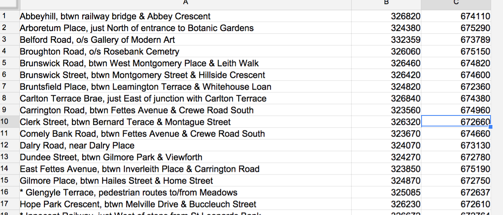
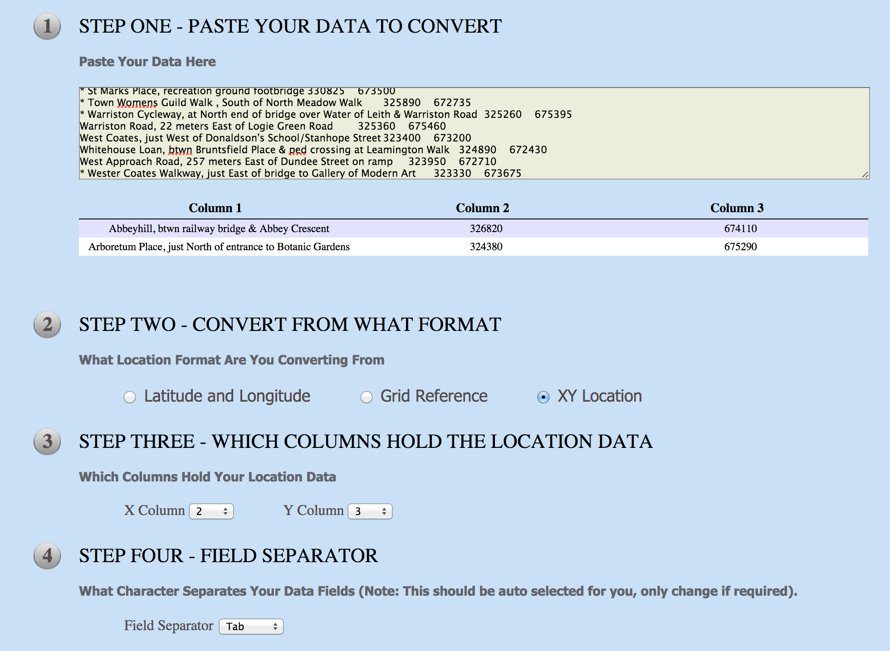

Decide where you are going to store your work, i.e., any data sets that you download and modify, any scripts you might write or use, any other outputs that you create from the data. Options (not mutually exclusive) include:
Name your work folders clearly and create subfolders if necessary. Do you care if you lose the folder?
Data stores to use:
And possibly
Try to use data from the CEC data sets to answer the following questions about Inverleith.
You may be able to do this by identifying relevant data sets in the CEC data stores and just looking at the data.
You may find that some of the data is geocoded using WGS84 latitude and longitude coordinates; e.g., 55.954419, -3.1735552. If you just paste these coordinates into a Google search bar, it will return a little map of the location.
Cepats 2013.xls file from CEPATS dataFile > Import > Replace spreadsheet.IN0730 and Survey Information. Let's start with IN0730IN0730Survey InformationWe want to just keep information to the left of the / in column B and just information to the right of the / in column C.
Your goal is to end up with a sheet that looks like this:

This will allow us to input our Grid Reference XY data into an application that convers the geocoordinates to WGS84 coordinates, which are more widely supported by by mapping coordinates.
We'll use Edit > Find and replace on each column separately, and we'll use regular expressions. These are the settings you should use in Google Sheets:
Find: / [0-9]+
Replace: [leave blank]
Check the option: Search using regular expressions
Select Specific range and give it the value 'Survey Information'!B:B
NB The replace string should be empty. Also note that we are deliberately getting rid of the space following the / character. Similarly for the following replacement.
Find: [0-9]+ /
Replace: [leave blank]
Check the option: Search using regular expressions
Select Specific range and give it the value 'Survey Information'!C:C
We are now going to use the GridReferenceFinder. This requires that you paste your tabular data into a box and tick some options. It should look like this:

Paste the results back into a new sheet.
Next, you are are going to add the new data you've just created into IN0730. You want to add this new data as extra columns. The locations in IN0730 should align with the street locations that you have just pasted in.
It should look something like this:1
You can now go ahead and delete the column with locations that you pasted in, leaving just the new geo-coordinates. Give labels to these two new columns: Latitude and Longitude, like this:
Congratulations if you've reached this point successfully!
In this section of the exercise, you are going to take a few more steps that will allow you to do a simple visualisation of the data on a map.
We want to change the spreadsheet so that we have a single column for the number of vehicles, and each row has an extra field for the category of vehicle. Here's what a portion of this would look like:
It is fairly easy to derive this new organisation of the data by copying and pasting in the spreadsheet, so it's up to you exactly how to carry it out. Make sure you save the result with an easy-to-remember name. I'd also recommend that you save it in CSV format.
There are several services we could use to map the data set as we now have it. For this exercise, we're going to use Google Fusion Tables. You will probably have to be logged into a Google account to get access to this service. If the link works for you, you should get to a splash screen that looks like this on Chrome:
Select the Create a Fusion Table button, and in the resulting dialogue box, choose the file that you ended up with in the preceding section. If you saved it in CSV format, all the default settings should work OK.
After loading the file, and choosing the Map of Latitude tab, you should get a result that looks like this:
There are a couple of points that immediately strike the eye:
I'm going to ignore (2); if you can figure out the problem with this, let me know! Let's see if we can do something about issue (3).
If you look at the Google tip on changing the icon marker, you'll see some clues on how to differentiate the marker according to the category of vehicle. Rather than adopting the procedure of merging two sheets suggested in the tip, let's just add markers by hand. Here's one examplel of what this might look like:
I've added a new column (F in this example) and labeled it Icon; and I've added the name of markers drawn from this guide to Google icon markers -- 'cycling' and 'cabs' are both names for markers. Note also that I've sorted the 'bike' rows on column D, and similarly for the 'car' rows, using an approach like this:
Select column D 1:38
Data > Sort range from D1 to D38
sort by Column D A->Z
Reload your data into a Fusion Table, and look at the map. Initially, it will look the same. However, if you go to the Configure map settings, and choose Change feature styles, you can change the default icon marker by selecting the Column option with settings like this:
Here's what the result might look like:
This is still not ideal, since the two sets of icons are overlayed. We can mitigate this problem by going to the Filter option and filtering on Category to only view one category of vehicle at a time.
Here are some more things to do:
Alternative Google approach to adding icon markers to an existing sheet
Note that I fixed the misspelling of ‘Inverlieth’↩